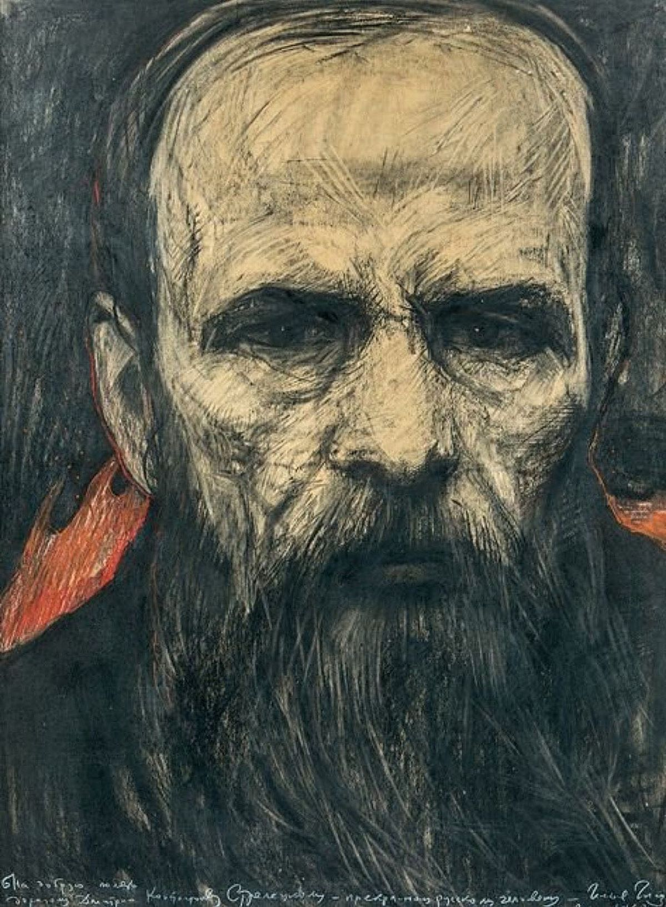
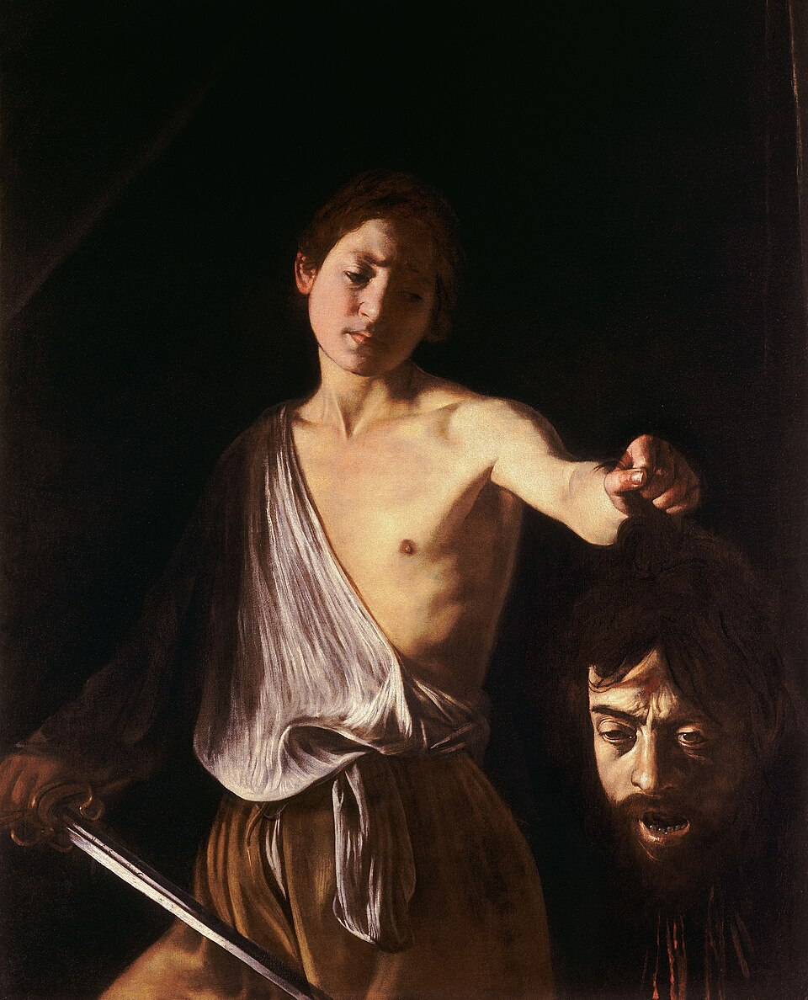

Dosto... ¿Qué? ¿Quién es?
Fiódor Mijáilovich Dostoyevski nació el 11 de noviembre de 1821 en Moscú y falleció el 9 de febrero de 1881 en San Petersburgo. Es considerado uno de los más grandes escritores de la literatura universal y una figura clave en la Rusia zarista. Fue el segundo hijo del matrimonio formado por María Fiódorovna Necháyeva y Mijaíl Andréievich Dostoievski, médico del hospital para pobres Mariinski en Moscú. Su infancia estuvo marcada por la severidad del padre y la dulzura de la madre, que representaba el refugio emocional para Fiódor y sus hermanos. Tras la muerte de su madre por tuberculosis en 1837, su padre cayó en una profunda depresión, por lo que Dostoyevski y su hermano Mijaíl fueron enviados a la Escuela de Ingenieros Militares de San Petersburgo. Allí nació su pasión por la literatura, leyendo a autores como Pascal, Victor Hugo y Shakespeare

Obras
Dostoievski fue condenado a muerte, indultado en el último instante, deportado a Siberia, arruinado por el juego y sacudido por la epilepsia. Vivió todo lo que un hombre puede vivir, y de todo ello brotó una literatura que escarba donde más duele: en la conciencia, en las contradicciones y en los rincones más oscuros de la psique humana. Sus personajes nunca son completamente buenos ni completamente malos; son seres atormentados, contradictorios, capaces de los actos más nobles y de las bajezas más oscuras en una misma tarde. Su trabajo era hacer "radiografías del alma" sin descuidar sus contextos sociales criticos. Dostoievski empezó su carrera en 1845 con una pequeña novela, "Pobre gente", un intercambio de cartas entre dos enamorados grises y desdichados, que fue todo un éxito y que aún hoy es un ejemplo de lo que puede llegarse a conseguir con una primera novela. Sin embargo, en los años siguientes publicaría relatos como "El doble" (1846) y "Noches blancas" (1848) que en los círculos literarios fueron recibidos con desdén. Turguénev y sus contertulios lo llamaban «el caballero de la triste figura». En la década de 1860 vieron la luz algunas pequeñas novelas que luego serían emblemáticas, como "Apuntes del subsuelo" (1864) y "El jugador" (1866), y sus primeras obras maestras: Crimen y castigo. La última novela de Dostoievski sería la monumental "Los hermanos Karamázov", donde persistiría en esa búsqueda de identificación entre universo moral y técnica narrativa, reuniendo además en ella todos lostipos de héroe que hasta entonces había tratado: el racionalista cínico, el ángel humano, el orgulloso que apela frenéticamente al «derecho al deshonor» y el extraviado sin rumbo cuya vida no es más que una sucesión de tragicómicos disparates.

El David con la cabeza de Goliat de Caravaggio